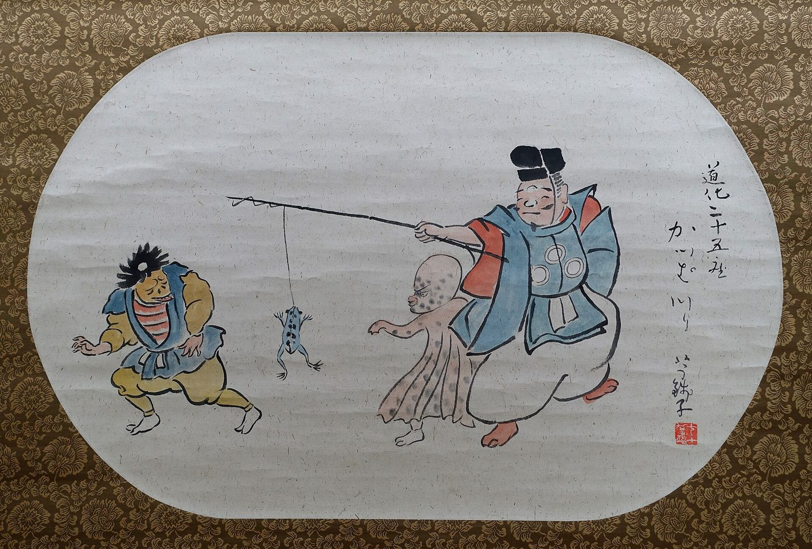

怪異は、危ない場所に現れる
河童は淵に、雪女は雪山に、テケテケは踏切に出る。世界中の怪異の出現場所を並べると、それが人の死にやすい場所と重なっていく。恐怖の話は、警告として作られたのか。

世界オカルト大全に並ぶ60の項目を、内容ではなく「どこに出るか」で並べ替えてみると、奇妙なことに気づく。
怪異は、行き当たりばったりに出現していない。人が実際に死んでいる場所に、集中して出る。
日本の場合 — 淵、雪山、踏切、トンネル
河童は水辺に出る。それも、川ならどこでもいいわけではない。民俗学者が集めた伝承の分布は、淵、堰、渡し場、急に深くなる場所に濃い。つまり、泳いでいて足がつかなくなる場所である。
雪女は雪山に出る。吹雪の夜、小屋で眠っている者のところに来る。実際に、吹雪のなかで眠ることは低体温症による死に直結する。「雪女に息を吹きかけられると死ぬ」は、「吹雪の夜に眠ると死ぬ」とほぼ同じことを言っている。
テケテケは踏切と線路に出る。口裂け女は夕方の帰り道に出る。八尺様は、知らない土地でひとりになったときに出る。
ただし、「事故を防ぐために誰かが意図的に作った」ことを示す史料はない。分布が重なるという事実と、目的があったという主張は別のものである。
世界でも同じことが起きている
日本だけの話ではない。
ネッシーが出るネス湖は、水温が低く、深く、視界が悪い。バミューダ・トライアングルは、実際に海難の多い海域である——ただしこちらは交通量が多いから件数も多いだけで、率としては他の海域と変わらないことが後に指摘された。
ジャージー・デビルが出るニュージャージー州のパインバレンズは、迷いやすい広大な湿地林である。イエティとビッグフットは、どちらもひとりで入れば帰れないかもしれない山に出る。
チュパカブラだけは少し違う。これは人ではなく家畜が死ぬ場所に出る。中南米の牧畜地帯で、原因不明の家畜の死は経済的な打撃そのものだった。
「危ないから話ができた」のか、「話があるから危なく見える」のか
ここには順番の問題がある。
ひとつめの説明は単純だ。実際に人が死んだから、その場所についての話ができた。誰かが淵で溺れた。理由を説明する言葉が必要だった。「河童に引かれた」という言い方が生まれ、次の世代に伝わり、結果として子どもがその淵に近づかなくなった。
だがもうひとつの説明もある。先に話があって、その場所が危険に見えるようになった。暗いトンネル、廃屋、深い森。人間は「見通しが悪く、逃げ道がなく、ひとりになる場所」に生理的な不安を感じる。その不安に名前をつけたものが怪異だ、という見方である。
どちらが正しいかは、多くの場合わからない。伝承の発生時期を特定できることのほうがまれだからである。
怪異が消えると、場所も忘れられる
興味深いのは、危険がなくなると怪異も消えることだ。
河童の話は、川に護岸ができて子どもが泳がなくなった地域から先に消えていった。いま河童は、川辺の看板か自治体のマスコットとして生き残っている。怖い存在ではなくなったのは、その川で人が死ななくなったからである。
逆に、新しい危険な場所には新しい怪異が生まれる。きさらぎ駅は2004年の掲示板から生まれた。ひとりで深夜の電車に乗っているという、きわめて現代的な状況を舞台にしている。
怪異のかたちは変わる。だが、「ここから先は危ない」と伝えるという機能だけは、数百年ずっと同じ場所に居座っている。
関連する項目
河童／雪女／テケテケ／犬鳴村伝説／きさらぎ駅／ジャージー・デビル／バミューダ・トライアングル
出典・参考
- 柳田國男『遠野物語』（青空文庫）河童・座敷童子などの記録
- Kappa（英語版ウィキペディア）水難との関連についての記述
- Urban legend（英語版ウィキペディア）都市伝説の機能に関する研究の概観